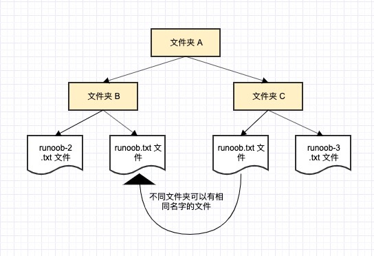
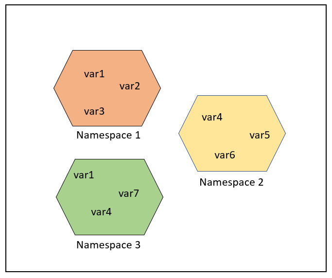
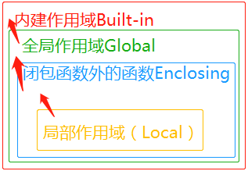

Espacios de nombres y ámbitos en Python3
Espacio de nombres
Primero veamos un párrafo de la documentación oficial:
A namespace is a mapping from names to objects.Most namespaces are currently implemented as Python dictionaries。
Un espacio de nombres (Namespace) es una asignación de nombres a objetos; la mayoría de los espacios de nombres se implementan mediante diccionarios de Python.
Los espacios de nombres proporcionan una manera de evitar conflictos de nombres en un proyecto. Cada espacio de nombres es independiente y no tiene relación con los demás, por lo que en un espacio de nombres no puede haber nombres repetidos, pero diferentes espacios de nombres pueden tener los mismos nombres sin ningún efecto.
Pongamos un ejemplo de un sistema informático: una carpeta (directorio) puede contener varias carpetas; cada carpeta no puede tener archivos con el mismo nombre, pero archivos en diferentes carpetas sí pueden tener el mismo nombre.

Generalmente hay tres tipos de espacios de nombres:
- Nombres integrados (built-in names), nombres integrados en el lenguaje Python, como los nombres de funciones abs, char y nombres de excepción BaseException, Exception, etc.
- Nombres globales (global names), nombres definidos en un módulo, que registran las variables del módulo, incluyendo funciones, clases, otros módulos importados, y variables y constantes a nivel de módulo.
- Nombres locales (local names), nombres definidos en una función, que registran las variables de la función, incluyendo los parámetros de la función y las variables definidas localmente. (También los definidos en una clase).

Orden de búsqueda en los espacios de nombres:
Supongamos que queremos usar la variable runoob; entonces el orden de búsqueda de Python es:Espacio de nombres local -> Espacio de nombres global -> Espacio de nombres integrado。
Si no se encuentra la variable runoob, abandonará la búsqueda y lanzará una excepción NameError:
NameError: name 'runoob' is not defined。
Ciclo de vida de los espacios de nombres:
El ciclo de vida de un espacio de nombres depende del ámbito del objeto; si el objeto termina de ejecutarse, el ciclo de vida de ese espacio de nombres finaliza.
Por lo tanto, no podemos acceder a los objetos de un espacio de nombres interno desde un espacio de nombres externo.
Ejemplo
var1 = 5
def some_func():
# var2 es un nombre local
var2 = 6
def some_inner_func():
# var3 es un nombre local anidado
var3 = 7
Como se muestra en la figura siguiente, el mismo nombre de objeto puede existir en múltiples espacios de nombres.

Ámbito
A scope is a textual region of a Python program where a namespace is directly accessible. "Directly accessible" here means that an unqualified reference to a name attempts to find the name in the namespace.
Un ámbito es la región textual de un programa Python en la que se puede acceder directamente a un espacio de nombres.
En un programa Python, al acceder directamente a una variable, se recorren todos los ámbitos de adentro hacia afuera hasta encontrarla; de lo contrario, se produce un error de variable no definida.
En Python, no se puede acceder a las variables del programa desde cualquier posición; el permiso de acceso depende de dónde se asigne la variable.
El ámbito de una variable determina en qué parte del programa se puede acceder a un nombre de variable específico.
Python tiene un total de 4 tipos de ámbito, que son:
Hay cuatro ámbitos:
- L（Local）: el más interno, contiene variables locales, por ejemplo, dentro de una función/método.
- E（Enclosing）: contiene variables no locales (non-local) ni globales (non-global). Por ejemplo, en dos funciones anidadas, si una función (o clase) A contiene a su vez una función B, entonces para los nombres dentro de B, el ámbito dentro de A es nonlocal.
- G（Global）: la capa más externa del script actual, por ejemplo, las variables globales del módulo actual.
- B（Built-in）: contiene variables/palabras clave integradas, etc. Es lo último que se busca.
Regla LEGB (Local, Enclosing, Global, Built-in): el orden de búsqueda de variables en Python es:L –> E –> G –> B。
- Local: el ámbito local de la función actual.
- Enclosing: contiene el ámbito de la función externa que envuelve a la función actual (si hay funciones anidadas).
- Global: el ámbito global del módulo actual.
- Built-in: el ámbito integrado de Python.
Si no se encuentra en el ámbito local, se buscará en los ámbitos locales externos (por ejemplo, en un cierre), luego en el global y después en el integrado.

g_count = 0 # 全局作用域
def outer():
o_count = 1 # 闭包函数外的函数中
def inner():
i_count = 2 # 局部作用域
El ámbito integrado se implementa mediante un módulo estándar llamado builtin, pero este nombre de variable en sí no está dentro del ámbito integrado, por lo que es necesario importar este archivo para poder usarlo. En Python 3.0, se puede usar el siguiente código para ver qué variables están predefinidas:
>>> import builtins >>> dir(builtins)
En Python solo los módulos, las clases y las funciones (def, lambda) introducen un nuevo ámbito; otros bloques de código (como if/elif/else, try/except, for/while, etc.) no introducen un nuevo ámbito. Es decir, las variables definidas dentro de estas sentencias también son accesibles desde fuera, como en el siguiente código:
>>> if True: ... msg = 'I am from Runoob' ... >>> msg 'I am from Runoob' >>>
En el ejemplo, la variable msg está definida dentro del bloque de la sentencia if, pero aún así se puede acceder a ella desde fuera.
Si msg se define dentro de una función, entonces es una variable local y no se puede acceder desde fuera:
>>> def test(): ... msg_inner = 'I am from Runoob' ... >>> msg_inner Traceback (most recent call last): File "<stdin>", line 1, in <module> NameError: name 'msg_inner' is not defined >>>
Según el mensaje de error, indica que msg_inner no está definido y no se puede usar, porque es una variable local y solo puede usarse dentro de la función.
Variables globales y locales
Las variables definidas dentro de una función tienen un ámbito local; las definidas fuera de una función tienen un ámbito global.
Las variables locales solo se pueden acceder dentro de la función donde se declaran, mientras que las variables globales se pueden acceder en todo el programa.
Las variables declaradas dentro de una función solo son válidas en el ámbito de esa función; al llamar a la función, estas variables internas se añaden al ámbito interno de la función y no afectan a variables del mismo nombre fuera de la función, como en el siguiente ejemplo:
Ejemplo (Python 3.0+)
El resultado del ejemplo anterior es:
函数内是局部变量 : 30 函数外是全局变量 : 0
1. Variable global: variable definida fuera de la función, accesible en todo el archivo. Las variables definidas fuera de una función son visibles para todas las funciones, a menos que dentro de la función se defina una variable local del mismo nombre.
Ejemplo
def my_function():
print(x) # Se puede acceder a la variable global x
my_function() # Imprime 10
2. Variable local: variable definida dentro de una función, solo válida dentro de la función; fuera de la función no se puede acceder. Las variables locales tienen prioridad sobre las globales, por lo que si una variable local y una global tienen el mismo nombre, la función usará la variable local.
Ejemplo
x = 5 # Variable local
print(x) # Acceder a la variable local x
my_function() # Imprime 5
print(x) # Error: NameError: name 'x' is not defined
Las palabras clave global y nonlocal
Cuando un ámbito interno quiere modificar una variable de un ámbito externo, se necesitan las palabras clave global y nonlocal.
El siguiente ejemplo modifica la variable global num:
Ejemplo (Python 3.0+)
El resultado del ejemplo anterior es:
1 123 123
Si se quiere modificar una variable en un ámbito anidado (ámbito enclosing, el ámbito externo no global), se necesita la palabra clave nonlocal, como en el siguiente ejemplo:
Ejemplo (Python 3.0+)
El resultado del ejemplo anterior es:
100 100
Además, hay un caso especial: supongamos que se ejecuta el siguiente código:
Ejemplo (Python 3.0+)
Al ejecutar el programa anterior, el mensaje de error es el siguiente:
Traceback (most recent call last):
File "test.py", line 7, in <module>
test()
File "test.py", line 5, in test
a = a + 1
UnboundLocalError: local variable 'a' referenced before assignment
El mensaje de error es un error de referencia en el ámbito local, porque en la función test se usa a como local, no está definida y no se puede modificar.
Modificar a como variable global:
Ejemplo
El resultado de la ejecución es:
También se puede pasar mediante parámetros de función:
Ejemplo (Python 3.0+)
El resultado de la ejecución es:
Resumen
- Variable globalDefinida fuera de la función, se puede acceder en todo el archivo.
- Variable localDefinida dentro de la función, solo se puede acceder dentro de la función.
- Uso
globalSe pueden modificar variables globales en una función. - Uso
nonlocalSe pueden modificar variables de la función externa en una función anidada.
alibi
ali***jia@qq.com
Como alguien que viene de Java, el ámbito de Python es un poco extraño. Como desarrollador, solo necesitas prestar atención al ámbito global y al ámbito local; el ámbito global es, en pocas palabras, las variables declaradas directamente en el módulo (en un solo archivo .py).
Por ejemplo, hay un archivo demo.py que contiene el siguiente código:
var_global='global_var'#这个var_global就是全局作用域 def globalFunc(): var_local='local_var' #这个就是局部变量 class demo(): class_demo_local_var='class member' #这里也是局部变量 def localFunc(self): var_locals='local_func_var'#这里也是局部变量Lo anterior solo explica que las variables globales son simplemente variables declaradas directamente en el archivo .py; también son variables globales las que están en bloques de código lógico escritos directamente en el archivo .py. Es decir, las variables en bloques de código lógico como if/elif/else/, try/except, for/while, etc.
En este tutorial, al presentar los tres espacios de nombres, se dice que el orden de búsqueda de variables es: espacio de nombres local -> espacio de nombres global -> espacio de nombres incorporado, pero yo entiendo que el orden de búsqueda de variables es: ámbito actual -> ámbito externo (si lo hay) -> ámbito global -> ámbito incorporado.
Solo decirlo no da una idea; veamos un fragmento de código para que quede claro.
Tomemos demo1.py como ejemplo:
global_var='this var on global space' ''' 申明global_var这个位置就是全局域，也就是教程中所说的全局作用域， 同时它也是直接声明在文件中的，而不是声明在函数中或者类中的变量 ''' class demo(): class_demo_local_var='class member' ''' 虽然class_demo_local_var在这里是局部变量，这个局部变量的域相对于var_locals是外部域， 所以可以直接被var_locals所在的更小的局部域访问 ''' def localFunc(self): var_locals='local_func_var' ''' 这里也是局部变量，但是相对于class_demo_local_var变量，却是更小的域， 因此class_demo_local_var所在的哪个域无法访问到当前域来 ''' print(self.class_demo_local_var)#到这里会查找当前域中有没有class_demo_local_var这个变量，然后再到相对于当前域的外部域去查找变量alibi
ali***jia@qq.com
tempo
luo***7@iccas.ac.cn
El tutorial dice que el orden de búsqueda de variables en Python es:“Si no se encuentra en el ámbito local, se buscará en el ámbito local externo (por ejemplo, en un cierre), y si no se encuentra, se buscará en el ámbito global, y luego en el incorporado.Se puede ver un ejemplo concreto.
Un valor incorporado de Python, int, primero lo asignamos a 0, y luego definimos una función fun1().
int = 0 def fun1(): int = 1 def fun2(): int = 2 print(int) fun2() fun1() # 输出 2La función fun1() se encarga de llamar a la función fun2() para imprimir el valor de int.
El resultado de salida es: 2
Porque int = 2 en local, la función lo imprime.
Elimina int = 2 de la función fun2():
int = 0 def fun1(): int = 1 def fun2(): print(int) fun2() fun1() # 输出 1Al llamar a la función fun1(), el resultado es: 1
Como local no encuentra el valor de int, va a la capa anterior non-local a buscarlo, encuentra int = 1 y lo imprime.
Y si además se elimina int = 1 de la función fun1():
int = 0 def fun1(): def fun2(): print(int) fun2() fun1() # 输出 0Al llamar a la función fun1(), el resultado es: 0
Como ni local ni non-local encuentran el valor de int, se va a global a buscarlo, encuentra int = 0 y lo imprime.
Si se elimina la condición int = 0:
def fun1(): def fun2(): print(int) fun2() fun1()Al llamar a la función fun1(), el resultado es el siguiente:
Como ni en local, non-local o global hay un valor para int, se va a built-in a buscar el valor de int, es decir:
tempo
luo***7@iccas.ac.cn
GsxxInRnb
993***819@qq.com
Dirección de referencia
Si no se utilizan las palabras clave global o nonlocal para declarar la variable local, en el ámbito local se puede acceder a las variables del espacio de nombres global, pero no se les puede asignar un valor.
Con respecto a este ejemplo del tutorial:
a = 10 def test(): a = a + 1 print(a) test()Después de ejecutarlo, ocurre lo siguiente: (muestra un error)
Si el programa se cambia a lo siguiente:
a = 10 def test(): b = a + 1 print(b) test()Resultado de la ejecución: (funciona normalmente)
En la función test(), se puede leer “a” del espacio de nombres global, correspondiente a la sentencia “b=a+1”.
Es decir, en el ámbito local se puede acceder a las variables del espacio de nombres global.
Si el programa se cambia a lo siguiente:
a = 10 def test(): b = a + 1 a=b print(b) test()Ejecución: (muestra un error)
La razón del error es que en la sentencia “a=b”, asignar un valor a “a” no está permitido.
Es decir, en la función test(), no se puede asignar un valor directamente a “a” en el espacio de nombres global.
Si el programa se cambia a lo siguiente:
a = 10 def test(): global a b = a + 1 a=b print(b) test() #输出b print(a) #输出aEjecución: (funciona normalmente)
La sentencia “global a” declara que “a” utiliza la “a” del espacio de nombres global, de modo que en la función test() se puede asignar un valor directamente a “a” en el espacio de nombres global.
Si no se utilizan las palabras clave global o nonlocal para declarar la variable local, en el ámbito local se puede acceder a las variables del espacio de nombres global, pero no se les puede asignar un valor.
Si se utilizan las palabras clave global o nonlocal para declarar la variable local, en el ámbito local se puede acceder a las variables del espacio de nombres global y también se les puede asignar un valor.
Por lo tanto, en el ámbito local, si se desea utilizar variables de un espacio de nombres externo, se deben declarar con las palabras clave global o nonlocal.
GsxxInRnb
993***819@qq.com
Dirección de referencia
fenglu
250***819@qq.com
La conclusión del comentario anterior es correcta, pero la lógica intermedia no lo es.
a = 10 def test(): b = a + 1 a=b print(b) test()Al ejecutarlo, se produce un error:
Aquí se explica muy claramente: el error no se debe en absoluto a la asignación de una variable global, sino a que a través de “a=b” se define una variable local a, pero la variable local a es referenciada en la sentencia anterior “b=a+1”. Es decir, se usa primero y luego se define; en “b=a+1”, a se interpreta como una variable local.
Entonces, ¿por qué al eliminar “a=b” no hay problema?
Porque al eliminarla ya no existe la definición de la variable local a, y en “b=a+1”, a se interpreta como la variable global a.
fenglu
250***819@qq.com
54kang
54k***@163.com
En cuanto a funciones con múltiples niveles de anidamiento, la variable declarada con la palabra clave nonlocal solo afecta a la variable de la capa inmediatamente superior; las capas más externas no se ven afectadas. Por ejemplo:
x = 0 # "全局参数" def outer(): # "外层函数" x = 3 def mid(): # "中层函数" x = 2 def inner(): # "内层函数" nonlocal x x = 1 print("x_inn=", x) inner() print("x_mid=", x) mid() print("x_out=", x) outer() print("x_glo=", x)La salida es:
Se puede ver que solo se modifica el valor del nivel medio, sin afectar el valor de la función externa. Si en la función del nivel medio también se añade nonlocal, cambiando a:
x = 0 # "全局参数" def outer(): # "外层函数" x = 3 def mid(): # "中层函数" nonlocal x # 增加了此行代码 x = 2 def inner(): # "内层函数" nonlocal x x = 1 print("x_inn=", x) inner() print("x_mid=", x) mid() print("x_out=", x) outer() print("x_glo=", x)La salida es:
54kang
54k***@163.com